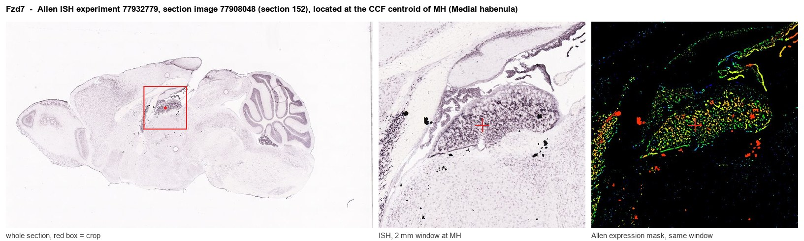
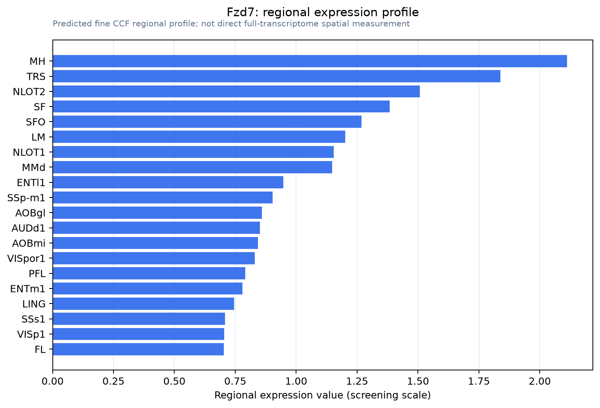

Fzd7
Frizzled-7 (Fz-7) (mFz7)
Spatial tier: RESTRICTED · Class: GPCR · Top region: MH (Medial habenula) · Positive regions: 16/554
45.2Discovery Score
39.9Targetability Score
CEvidence grade C
What this means: Fzd7: fine CCF profile is restricted toward MH (top regions: MH, TRS, NLOT2, SF, SFO; 16 positive regions); direct spatial validation is still required.
Function in MH: evidence, prediction, innovation
- Gene function
- FZD7 (Frizzled-7) is a seven-transmembrane Wnt receptor. It is the Frizzled most closely associated with stem-cell maintenance and with both canonical Wnt/beta-catenin and non-canonical planar-cell-polarity signalling, and it is a prominent oncology target in gastric, lung and Wilms tumours, where blocking antibodies are in development.
- Region function
- The medial habenula is a dorsal diencephalic nucleus whose cholinergic, glutamatergic and substance-P neurons project almost exclusively through the fasciculus retroflexus to the interpeduncular nucleus; it controls nicotine aversion and withdrawal, anxiety and mood.
- Published in this region
- inferred No region-specific literature found. As for Frizzled-1, the only relevant neural evidence is pathway-level: temporal control of Wnt signalling is required for habenular neuron diversity and brain asymmetry (Guglielmi et al. 2020), and the habenular nuclei develop under Wnt control (Roberson & Halpern 2018); FZD7 itself has been studied almost exclusively in cancer and endothelial biology (Flanagan et al. 2019; Peghaire et al. 2016).
- Predicted function
- Prediction: FZD7 in the medial habenula is predicted to act through the planar-cell-polarity arm rather than beta-catenin, organising the strikingly stereotyped dorsoventral topography with which medial habenular subnuclei project onto interpeduncular subregions. Conditional Fzd7 deletion during MH development is predicted to blur this topographic mapping in the fasciculus retroflexus without changing neuron number, and behaviourally to produce a mismatch phenotype in which nicotine aversion and anxiety-like behaviour are altered in opposite directions; in adults, Fzd7 blocking antibodies delivered locally should test whether the receptor is also required for maintenance of this topography.
- Innovation
- ★★★★★ 5/5 Wnt receptor identity has never been resolved in the mammalian habenula, and FZD7-selective blocking antibodies from oncology give an unusual acute-manipulation option.
- Tools
- Fzd7 knockout and Fzd7 floxed mice; FZD7-selective blocking antibodies developed in oncology (for example SHH002-hu1) and the pan-Frizzled decoy OMP-54F28; Wnt ligands and porcupine inhibitors LGK974/IWP-2; anti-FZD7 antibodies; Tac1-Cre and Chat-Cre for medial habenula subpopulations.
- References
Direct evidence located at the region

Allen ISH experiment 77932779, section image 77908048 (section 152): the section that contains the CCF centroid of Medial habenula according to the Allen image-to-atlas alignment (reference_to_image), with a 2 mm window around that point. Left: whole section, red box = window. Middle: ISH signal. Right: Allen's expression-mask view of the same window. open this image in the Allen viewer
Look it up yourself: Allen Mouse Brain ISH for Fzd7Allen reference atlas: MH (structure 483)ABC Atlas MERFISH viewer(in the ABC Atlas choose dataset MERFISH-C57BL6J-638850-CCF, colour cells by gene "Fzd7" or by parcellation_substructure "MH")All genes confined to MH + 3-D brain
Direct spatial evidence
MERFISH REGION LOCATOR

Regional expression figure

Predicted WMB × fine-CCF profile; not direct full-transcriptome spatial measurement.
Spatial profile
Evidence and specificity
- Evidence status
- PREDICTED_FINE
- Direct sources
- None; predicted localization only
- Exclusive threshold
- 12 positive regions out of 554
- Spatial specificity
- 0.315
- Top-region fraction
- 0.067
- Filter status
- PASS
Interpretation limits
- Cell-type-to-region projection is imputed expression, not direct spatial measurement.
- Adult reference atlases do not establish stability across age, sex, strain, state, or disease.
- Transcript abundance does not guarantee protein abundance or genetic-tool performance.